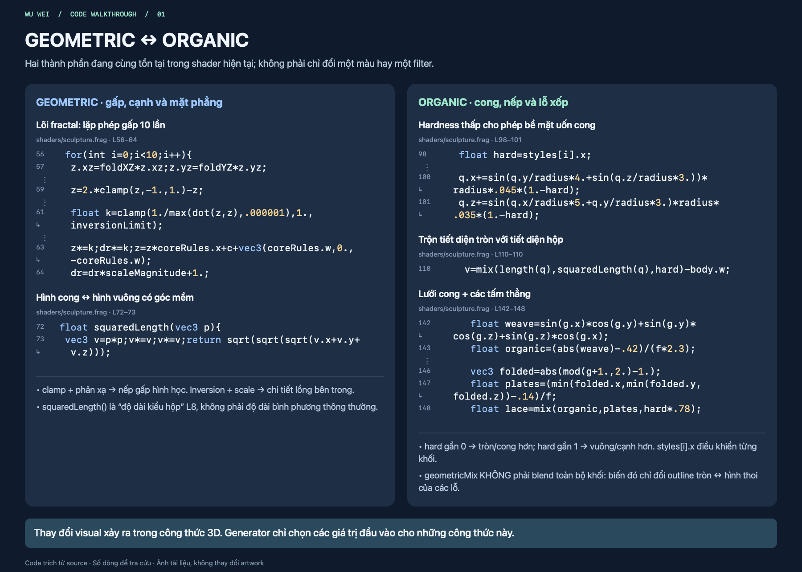
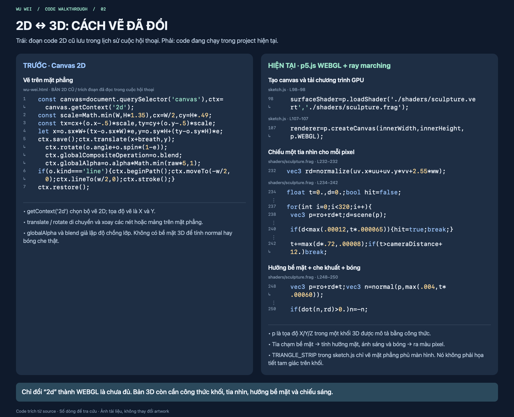
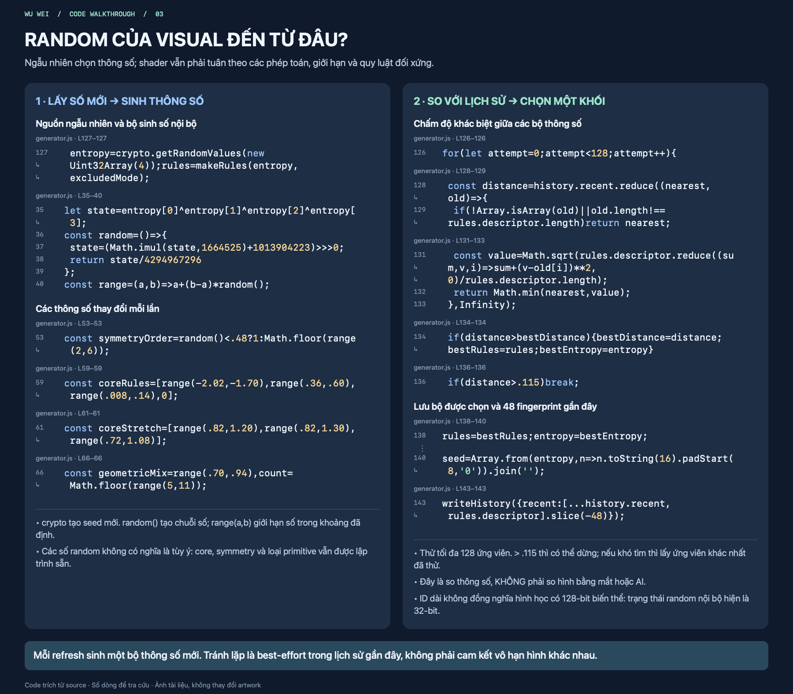
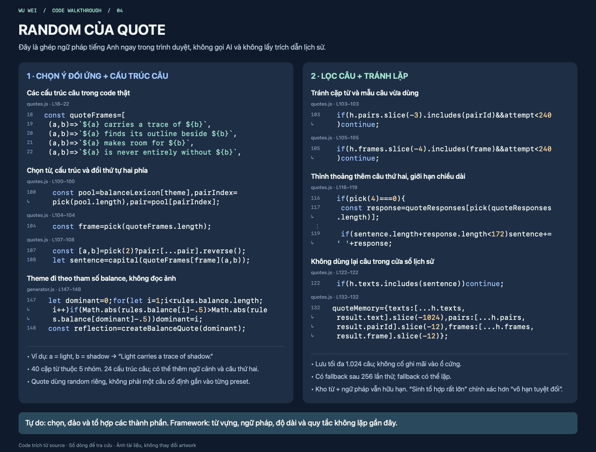
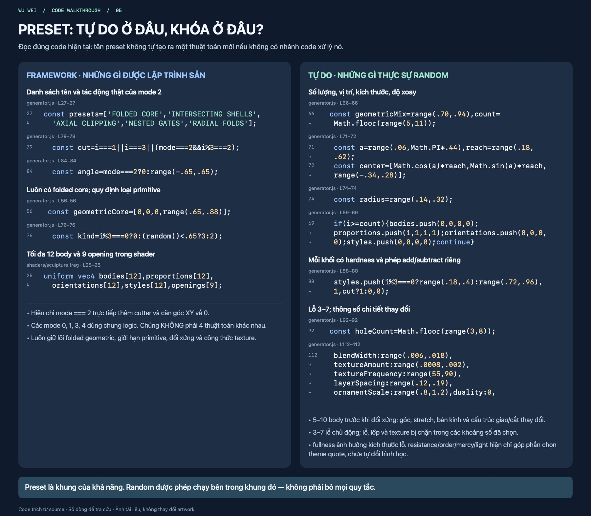
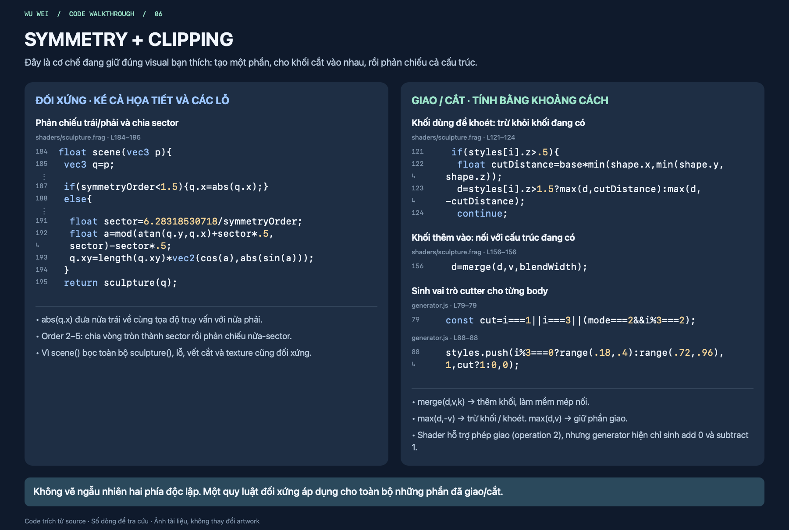

Wu Wei — Giải thích codeGEOMETRIC ↔ ORGANIC
Hai thành phần đang cùng tồn tại trong shader hiện tại; không phải chỉ đổi một màu hay một filter.

Thay đổi visual xảy ra trong công thức 3D. Generator chỉ chọn các giá trị đầu vào cho những công thức này.
2D ↔ 3D: CÁCH VẼ ĐÃ ĐỔI
Trái: đoạn code 2D cũ lưu trong lịch sử cuộc hội thoại. Phải: code đang chạy trong project hiện tại.

Chỉ đổi “2d” thành WEBGL là chưa đủ. Bản 3D còn cần công thức khối, tia nhìn, hướng bề mặt và chiếu sáng.
RANDOM CỦA VISUAL ĐẾN TỪ ĐÂU?
Ngẫu nhiên chọn thông số; shader vẫn phải tuân theo các phép toán, giới hạn và quy luật đối xứng.

Mỗi refresh sinh một bộ thông số mới. Tránh lặp là best-effort trong lịch sử gần đây, không phải cam kết vô hạn hình khác nhau.
RANDOM CỦA QUOTE
Đây là ghép ngữ pháp tiếng Anh ngay trong trình duyệt, không gọi AI và không lấy trích dẫn lịch sử.

Tự do: chọn, đảo và tổ hợp các thành phần. Framework: từ vựng, ngữ pháp, độ dài và quy tắc không lặp gần đây.
PRESET: TỰ DO Ở ĐÂU, KHÓA Ở ĐÂU?
Đọc đúng code hiện tại: tên preset không tự tạo ra một thuật toán mới nếu không có nhánh code xử lý nó.

Preset là khung của khả năng. Random được phép chạy bên trong khung đó — không phải bỏ mọi quy tắc.
SYMMETRY + CLIPPING
Đây là cơ chế đang giữ đúng visual bạn thích: tạo một phần, cho khối cắt vào nhau, rồi phản chiếu cả cấu trúc.

Không vẽ ngẫu nhiên hai phía độc lập. Một quy luật đối xứng áp dụng cho toàn bộ những phần đã giao/cắt.